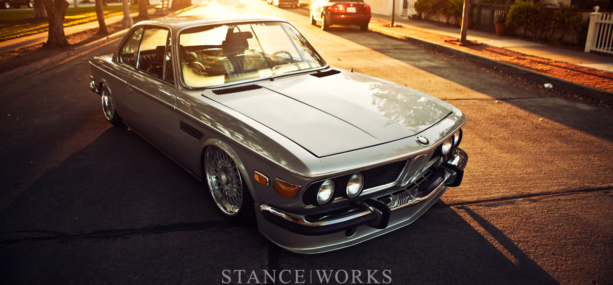
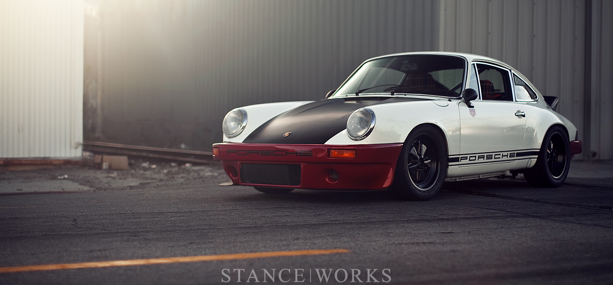
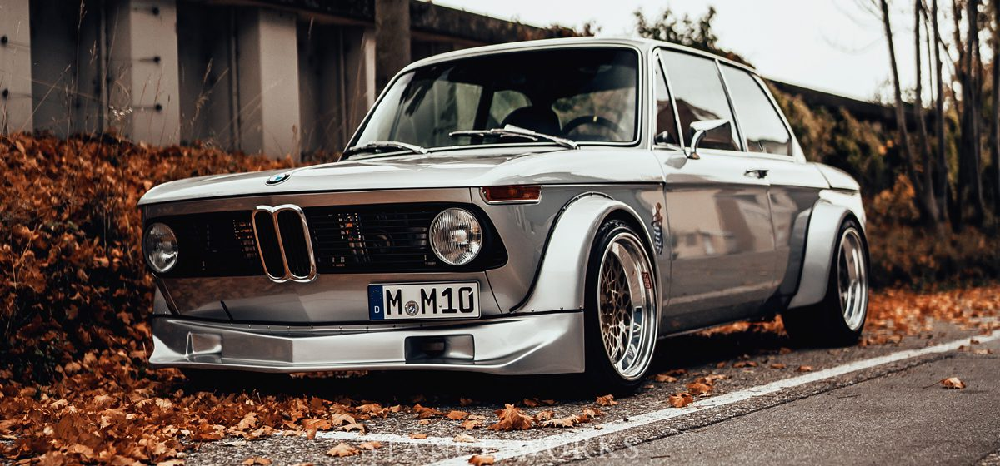

OUR BEST PROJECTS

A WALK IN THE PARK WITH MY GAL: MIKE BURROUGHS’S 1971 BMW E9
There’s something special about classic cars. Their defined lines and established curves, strangely inviting, even to those who don’t know the difference between wheel and...

MAGNUS WALKER’S PORSCHE 78SCHR
It’s easy to feel removed when you skim the pages of the latest car magazine, scroll through the most recent blog posts, or watch as...

THE BAVARIAN OUTLAW – GEORGE SCHUSTER’S S14-POWERED BMW 2002
In 1973, the world was blessed with Europe’s first turbocharged production car: the BMW 2002 Turbo. With 170 horsepower and 177 pound-feet of torque, it...